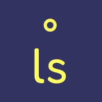
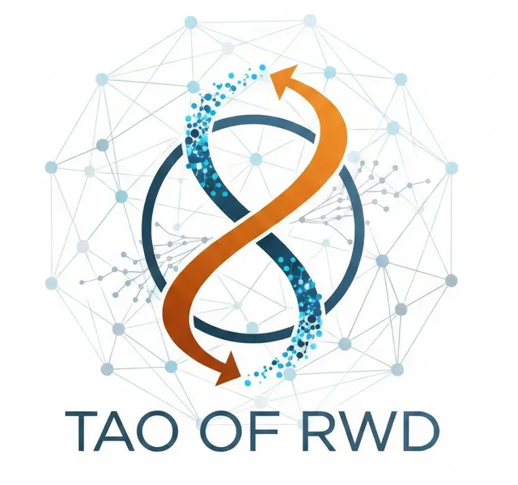

<!DOCTYPE html>
<html lang="en">
<head>
  <meta charset="UTF-8" />
  <meta name="viewport" content="width=device-width, initial-scale=1.0" />
  <title>Expert-Augmented Causal SHAP | ACIC 2026</title>
  <meta name="description" content="Companion dashboard for the ACIC 2026 poster: Expert-Augmented Causal SHAP. SHAP has short memory. Causal SHAP remembers the DAG." />
  <link href="https://fonts.googleapis.com/css2?family=Playfair+Display:wght@400;600;700&family=Source+Sans+3:wght@300;400;500;600;700&family=Caveat:wght@500;600;700&display=swap" rel="stylesheet" />
  <link rel="stylesheet" href="https://cdn.jsdelivr.net/npm/katex@0.16.11/dist/katex.min.css" />
  <style>
    * { margin: 0; padding: 0; box-sizing: border-box; }
    .katex { font-size: 1.05em; }
    html { scroll-behavior: smooth; }
    @keyframes flow {
      0% { stroke-dashoffset: 40; }
      100% { stroke-dashoffset: 0; }
    }
    @keyframes pulse-ring {
      0% { r: 8; opacity: 0.6; }
      100% { r: 22; opacity: 0; }
    }
    .flow-arrow { stroke-dasharray: 6 4; animation: flow 1.2s linear infinite; }
  </style>
</head>
<body>
  <div id="root"></div>

  <script crossorigin="anonymous" src="https://unpkg.com/react@18/umd/react.production.min.js"></script>
  <script crossorigin="anonymous" src="https://unpkg.com/react-dom@18/umd/react-dom.production.min.js"></script>
  <script crossorigin="anonymous" src="https://unpkg.com/prop-types@15/prop-types.min.js"></script>
  <script crossorigin="anonymous" src="https://unpkg.com/recharts@2.15.0/umd/Recharts.js"></script>
  <script crossorigin="anonymous" src="https://cdn.jsdelivr.net/npm/katex@0.16.11/dist/katex.min.js"></script>
  <script crossorigin="anonymous" src="https://unpkg.com/@babel/standalone/babel.min.js"></script>

  <script type="text/babel">
const { useState, useMemo, useEffect, useRef } = React;
const {
  BarChart, Bar, XAxis, YAxis, CartesianGrid, Tooltip, LineChart, Line,
  ResponsiveContainer, ReferenceLine, ReferenceDot, Cell, Label, Legend, ComposedChart
} = Recharts;

/* ─── Color Palette ─────────────────────────────────────────────────────── */
const COLORS = {
  blue:    "#4682B4",   // true causes (Treatment)
  red:     "#C0392B",   // bias / mediator inflation
  teal:    "#008080",   // causal SHAP
  orange:  "#E67E22",   // accent / expert
  purple:  "#783C96",   // DAG / discovery
  gold:    "#C9A86A",   // highlight
  gray:    "#6B7280",   // standard SHAP
  bg:      "#fffdf9",
  text:    "#1a202c",
  subtle:  "#4a5568",
  muted:   "#a0aec0",
  border:  "#e2e8f0",
  cardBg:  "rgba(255,255,255,0.85)",
};

/* ─── Shared components ─────────────────────────────────────────────────── */

const Tex = ({ math, display }) => {
  const ref = useRef(null);
  useEffect(() => {
    if (ref.current && typeof katex !== 'undefined') {
      katex.render(String(math), ref.current, { throwOnError: false, displayMode: !!display });
    }
  }, [math, display]);
  return display
    ? <div ref={ref} style={{ margin: '4px 0', overflowX: 'auto', textAlign: 'center' }} />
    : <span ref={ref} />;
};

const MathBlock = ({ children }) => (
  <div style={{ padding: "14px 20px", background: "rgba(45,55,72,0.04)", borderLeft: "3px solid rgba(45,55,72,0.15)", borderRadius: "0 6px 6px 0", margin: "14px 0", overflowX: "auto" }}>
    {children}
  </div>
);

const SectionNav = ({ sections, active, onSelect }) => (
  <nav style={{ display: "flex", gap: "2px", padding: "6px", background: "rgba(45,55,72,0.04)", borderRadius: "10px", marginBottom: "32px", flexWrap: "wrap" }}>
    {sections.map((s, i) => (
      <button key={i} onClick={() => onSelect(i)} style={{
        flex: "1 1 auto", padding: "10px 14px", border: "none", borderRadius: "8px",
        background: active === i ? "#2d3748" : "transparent",
        color: active === i ? "#f7fafc" : "#4a5568",
        fontFamily: "'Source Sans 3', sans-serif", fontSize: "0.82rem",
        fontWeight: active === i ? 600 : 500, cursor: "pointer",
        transition: "all 0.2s", letterSpacing: "0.02em", whiteSpace: "nowrap"
      }}>
        <span style={{ opacity: 0.5, marginRight: 6 }}>{i + 1}</span>{s}
      </button>
    ))}
  </nav>
);

const InsightBox = ({ children, label = "Note", color = COLORS.teal }) => (
  <div style={{
    marginTop: 24, padding: "16px 20px",
    background: `linear-gradient(135deg, ${hexAlpha(color, 0.08)}, ${hexAlpha(color, 0.02)})`,
    borderLeft: `4px solid ${color}`, borderRadius: "0 10px 10px 0",
    border: `1px solid ${COLORS.border}`, borderLeftWidth: 4, borderLeftColor: color
  }}>
    <h4 style={{ margin: "0 0 6px", color, fontSize: "0.88rem", fontFamily: "'Source Sans 3', sans-serif", fontWeight: 700, letterSpacing: "0.03em" }}>{label.toUpperCase()}</h4>
    <div style={{ margin: 0, color: COLORS.subtle, lineHeight: 1.7, fontSize: "0.92rem", fontFamily: "'Source Sans 3', sans-serif" }}>{children}</div>
  </div>
);

function hexAlpha(hex, a) {
  const h = hex.replace("#", "");
  const r = parseInt(h.slice(0,2), 16), g = parseInt(h.slice(2,4), 16), b = parseInt(h.slice(4,6), 16);
  return `rgba(${r},${g},${b},${a})`;
}

const GlassCard = ({ children, style }) => (
  <div style={{
    background: COLORS.cardBg, borderRadius: 12, padding: "20px 24px",
    border: `1px solid ${COLORS.border}`,
    backdropFilter: "blur(10px)", boxShadow: "0 2px 12px rgba(0,0,0,0.04)",
    ...style
  }}>{children}</div>
);

const SliderControl = ({ label, value, min, max, step, onChange, color, unit, width, format }) => (
  <div style={{ display: "flex", alignItems: "center", gap: 10, marginBottom: 10, flexWrap: "wrap" }}>
    <label style={{ fontFamily: "'Source Sans 3', sans-serif", fontSize: "0.88rem", fontWeight: 600, color: COLORS.text, minWidth: width || 160 }}>{label}</label>
    <input type="range" min={min} max={max} step={step || 0.1} value={value} onChange={e => onChange(parseFloat(e.target.value))} style={{ flex: 1, minWidth: 100, accentColor: color || COLORS.teal }} />
    <span style={{ fontFamily: "'Source Sans 3', sans-serif", fontSize: "0.9rem", fontWeight: 700, color: color || COLORS.teal, minWidth: 60, textAlign: "right" }}>
      {format ? format(value) : `${(step >= 1 ? value.toFixed(0) : value.toFixed(2))}${unit || ""}`}
    </span>
  </div>
);

const PrevNextNav = ({ active, total, onSelect }) => (
  <div style={{ display: "flex", justifyContent: "space-between", marginTop: 32, paddingTop: 20, borderTop: `1px solid ${COLORS.border}` }}>
    <button disabled={active === 0} onClick={() => onSelect(active - 1)} style={{
      padding: "10px 20px", borderRadius: 8, border: `1px solid ${COLORS.border}`,
      background: active === 0 ? "#f7f7f7" : "white", color: active === 0 ? COLORS.muted : COLORS.text,
      fontFamily: "'Source Sans 3', sans-serif", fontSize: "0.88rem", fontWeight: 600,
      cursor: active === 0 ? "default" : "pointer", transition: "all 0.2s"
    }}>&#8592; Previous</button>
    {active < total - 1 && (
      <button onClick={() => onSelect(active + 1)} style={{
        padding: "10px 20px", borderRadius: 8, border: `1px solid ${COLORS.border}`,
        background: "white", color: COLORS.text,
        fontFamily: "'Source Sans 3', sans-serif", fontSize: "0.88rem", fontWeight: 600,
        cursor: "pointer", transition: "all 0.2s"
      }}>Next &#8594;</button>
    )}
  </div>
);

const SectionTitle = ({ children, kicker }) => (
  <>
    {kicker && <p style={{ fontFamily: "'Source Sans 3', sans-serif", fontSize: "0.72rem", letterSpacing: "0.14em", textTransform: "uppercase", color: COLORS.muted, marginBottom: 6 }}>{kicker}</p>}
    <h2 style={{ fontFamily: "'Playfair Display', serif", fontSize: "1.65rem", fontWeight: 700, color: COLORS.text, marginBottom: 16, lineHeight: 1.2 }}>{children}</h2>
  </>
);

const Para = ({ children }) => (
  <p style={{ fontFamily: "'Source Sans 3', sans-serif", fontSize: "0.95rem", lineHeight: 1.75, color: COLORS.subtle, marginBottom: 14 }}>{children}</p>
);

const MetricCard = ({ label, value, sub, color }) => (
  <div style={{
    flex: 1, background: "white", border: `1px solid ${COLORS.border}`,
    borderTop: `3px solid ${color}`, borderRadius: 10, padding: "14px 16px",
    textAlign: "center", minWidth: 120
  }}>
    <div style={{ fontFamily: "'Playfair Display', serif", fontSize: "1.85rem", fontWeight: 700, color, lineHeight: 1.1 }}>{value}</div>
    <div style={{ fontFamily: "'Source Sans 3', sans-serif", fontSize: "0.82rem", fontWeight: 600, color: COLORS.text, marginTop: 6 }}>{label}</div>
    {sub && <div style={{ fontFamily: "'Source Sans 3', sans-serif", fontSize: "0.74rem", color: COLORS.muted, marginTop: 2 }}>{sub}</div>}
  </div>
);

/* ═══════════════════════════════════════════════════════════════════════════
   DATA: simcausal validation results (from Guide §6.2 / §6.3)
   ═══════════════════════════════════════════════════════════════════════════ */

const FEATURES = [
  { name: "Inflammation", role: "mediator",    stdShap: 1.00, causalShap: 1.00, stdRank:  1, causalRank: 1, trueEffect: -2.25 },
  { name: "Oxygenation",  role: "mediator",    stdShap: 0.78, causalShap: 0.48, stdRank:  2, causalRank: 3, trueEffect:  0.50 },
  { name: "Comorbidity",  role: "confounder",  stdShap: 0.72, causalShap: 0.40, stdRank:  3, causalRank: 5, trueEffect: -4.38 },
  { name: "HR",           role: "downstream",  stdShap: 0.55, causalShap: 0.12, stdRank:  4, causalRank: 9, trueEffect: -0.03 },
  { name: "Treatment",    role: "true cause",  stdShap: 0.49, causalShap: 0.55, stdRank:  5, causalRank: 4, trueEffect: 11.00 },
  { name: "Age",          role: "confounder",  stdShap: 0.41, causalShap: 0.10, stdRank:  6, causalRank: 10, trueEffect: -0.10 },
  { name: "Creatinine",   role: "descendant",  stdShap: 0.32, causalShap: 0.32, stdRank:  7, causalRank: 6, trueEffect:  0.00 },
  { name: "SBP",          role: "confounder",  stdShap: 0.27, causalShap: 0.30, stdRank:  8, causalRank: 7, trueEffect:  0.00 },
  { name: "BMI",          role: "confounder",  stdShap: 0.23, causalShap: 0.27, stdRank:  9, causalRank: 8, trueEffect: -0.23 },
  { name: "Glucose",      role: "confounder",  stdShap: 0.12, causalShap: 0.72, stdRank: 10, causalRank: 2, trueEffect:  0.00 },
  { name: "Sex",          role: "root",        stdShap: 0.05, causalShap: 0.05, stdRank: 11, causalRank: 11, trueEffect: 0.00 },
];

const ROLE_COLORS = {
  "mediator":   COLORS.red,
  "true cause": COLORS.blue,
  "confounder": COLORS.gray,
  "downstream": "#D4A574",
  "descendant": "#b0b0b0",
  "root":       "#cfd4d9",
};

const SECTION_NAMES = [
  "The Artifact",
  "The Correction",
  "simcausal Evidence",
  "Rank Movement",
  "When It Matters",
  "The Workflow",
  "Try It",
];

/* ═══════════════════════════════════════════════════════════════════════════
   TAB 0 — The Artifact
   ═══════════════════════════════════════════════════════════════════════════ */

const Tab_Artifact = () => {
  const [animating, setAnimating] = useState(true);
  const [showTwo, setShowTwo] = useState(false);

  return (
    <div>
      <SectionTitle kicker="The Problem">
        SHAP has short memory. That&rsquo;s a problem when features cause each other.
      </SectionTitle>
      <Para>
        SHAP values attribute a model&rsquo;s prediction to its input features by averaging each feature&rsquo;s marginal
        contribution across <em>every</em> possible ordering. It treats features as exchangeable. But in a causal system,
        features are <strong>not</strong> exchangeable &mdash; causes come before effects.
      </Para>
      <Para>
        When SHAP permutes features freely, variables that sit close to the outcome in the causal graph
        (mediators, downstream consequences) absorb credit that properly belongs to the upstream causes. This isn&rsquo;t
        a bug in SHAP. It&rsquo;s a <strong>topological artifact</strong>.
      </Para>

      <GlassCard style={{ marginTop: 28, marginBottom: 28, padding: "32px 32px 28px" }}>
        <div style={{ textAlign: "center", marginBottom: 28 }}>
          <h4 style={{ fontFamily: "'Source Sans 3', sans-serif", fontSize: "0.78rem", letterSpacing: "0.16em", textTransform: "uppercase", color: COLORS.muted, marginBottom: 6 }}>The central argument</h4>
          <h3 style={{ fontFamily: "'Caveat', cursive", fontSize: "2rem", color: COLORS.text, fontWeight: 600, margin: 0 }}>
            Truth <span style={{ color: COLORS.muted, fontSize: "1.4rem", margin: "0 14px", verticalAlign: "middle" }}>vs.</span> what SHAP thinks
          </h3>
        </div>

        <svg viewBox="0 0 900 620" style={{ width: "100%", maxWidth: 900, display: "block", margin: "0 auto" }}>
          <defs>
            <marker id="arrowInk" markerWidth="8" markerHeight="8" refX="7" refY="4" orient="auto">
              <polygon points="0 0, 8 4, 0 8" fill={COLORS.text} />
            </marker>
            <marker id="arrowRed" markerWidth="8" markerHeight="8" refX="7" refY="4" orient="auto">
              <polygon points="0 0, 8 4, 0 8" fill={COLORS.red} />
            </marker>
            <marker id="arrowFaded" markerWidth="8" markerHeight="8" refX="7" refY="4" orient="auto">
              <polygon points="0 0, 8 4, 0 8" fill={COLORS.muted} opacity="0.35" />
            </marker>
          </defs>

          {/* ============ Panel labels at top ============ */}
          <text x="225" y="38" textAnchor="middle" fontFamily="'Caveat', cursive" fontSize="28" fontWeight="700" fill={COLORS.blue}>Truth</text>
          <text x="675" y="38" textAnchor="middle" fontFamily="'Caveat', cursive" fontSize="28" fontWeight="700" fill={COLORS.red}>What SHAP thinks</text>

          {/* Vertical divider — hand-drawn feel with slight wobble */}
          <path d="M 450 60 Q 448 170, 452 280 T 450 560" stroke={COLORS.border} strokeWidth="1.5" strokeDasharray="2 6" strokeLinecap="round" fill="none" />

          {/* ============ ROW 1 — simple mediation (A → B → Y) ============ */}
          <text x="30" y="100" fontFamily="'Caveat', cursive" fontSize="22" fill={COLORS.subtle}>simple mediation</text>

          {/* TRUTH side — clear A → B → Y */}
          {/* A */}
          <circle cx="130" cy="180" r="30" fill={hexAlpha(COLORS.blue, 0.12)} stroke={COLORS.blue} strokeWidth="3" strokeLinecap="round" />
          <text x="130" y="187" textAnchor="middle" fontFamily="'Caveat', cursive" fontSize="26" fontWeight="700" fill={COLORS.blue}>A</text>
          <text x="130" y="232" textAnchor="middle" fontFamily="'Caveat', cursive" fontSize="17" fill={COLORS.blue} fontStyle="italic">cause</text>
          {/* B */}
          <circle cx="250" cy="180" r="30" fill={hexAlpha(COLORS.red, 0.12)} stroke={COLORS.red} strokeWidth="3" strokeLinecap="round" />
          <text x="250" y="187" textAnchor="middle" fontFamily="'Caveat', cursive" fontSize="26" fontWeight="700" fill={COLORS.red}>B</text>
          <text x="250" y="232" textAnchor="middle" fontFamily="'Caveat', cursive" fontSize="17" fill={COLORS.red} fontStyle="italic">mediator</text>
          {/* Y */}
          <circle cx="370" cy="180" r="30" fill="#f7f7f7" stroke={COLORS.text} strokeWidth="3" strokeLinecap="round" />
          <text x="370" y="187" textAnchor="middle" fontFamily="'Caveat', cursive" fontSize="26" fontWeight="700" fill={COLORS.text}>Y</text>
          <text x="370" y="232" textAnchor="middle" fontFamily="'Caveat', cursive" fontSize="17" fill={COLORS.text} fontStyle="italic">outcome</text>

          {/* Edges — slightly curved for hand-drawn feel */}
          <path d="M 161 178 Q 190 172, 219 178" stroke={COLORS.text} strokeWidth="2.5" fill="none" strokeLinecap="round" markerEnd="url(#arrowInk)" />
          <path d="M 281 182 Q 310 188, 339 182" stroke={COLORS.text} strokeWidth="2.5" fill="none" strokeLinecap="round" markerEnd="url(#arrowInk)" />

          {/* SHAP THINKS side — B → Y huge, A faded out */}
          {/* Faded A with a strikethrough */}
          <circle cx="555" cy="180" r="26" fill="none" stroke={COLORS.muted} strokeWidth="2" strokeDasharray="4 4" opacity="0.4" />
          <text x="555" y="186" textAnchor="middle" fontFamily="'Caveat', cursive" fontSize="22" fill={COLORS.muted} opacity="0.45">A</text>
          <text x="555" y="225" textAnchor="middle" fontFamily="'Caveat', cursive" fontSize="15" fill={COLORS.muted} opacity="0.55" fontStyle="italic">invisible to SHAP</text>
          {/* B — prominent */}
          <circle cx="680" cy="180" r="38" fill={hexAlpha(COLORS.red, 0.18)} stroke={COLORS.red} strokeWidth="4" strokeLinecap="round" />
          <text x="680" y="190" textAnchor="middle" fontFamily="'Caveat', cursive" fontSize="32" fontWeight="700" fill={COLORS.red}>B</text>
          {/* Y */}
          <circle cx="800" cy="180" r="30" fill="#f7f7f7" stroke={COLORS.text} strokeWidth="3" strokeLinecap="round" />
          <text x="800" y="187" textAnchor="middle" fontFamily="'Caveat', cursive" fontSize="26" fontWeight="700" fill={COLORS.text}>Y</text>

          {/* Faded A → B arrow (what SHAP misses) */}
          <path d="M 583 178 Q 613 172, 642 178" stroke={COLORS.muted} strokeWidth="2" fill="none" strokeLinecap="round" strokeDasharray="4 4" markerEnd="url(#arrowFaded)" opacity="0.4" />
          {/* Bold B → Y arrow */}
          <path d="M 720 182 Q 750 188, 770 182" stroke={COLORS.red} strokeWidth="4" fill="none" strokeLinecap="round" markerEnd="url(#arrowRed)" />

          <text x="680" y="258" textAnchor="middle" fontFamily="'Caveat', cursive" fontSize="17" fill={COLORS.muted} fontStyle="italic">B absorbs A&rsquo;s credit</text>

          {/* ============ Horizontal divider ============ */}
          <path d="M 30 310 Q 450 306, 870 312" stroke={COLORS.border} strokeWidth="1.5" strokeDasharray="2 6" strokeLinecap="round" fill="none" />

          {/* ============ ROW 2 — confounder + collider ============ */}
          <text x="30" y="355" fontFamily="'Caveat', cursive" fontSize="22" fill={COLORS.subtle}>confounder and collider</text>

          {/* TRUTH side — full DAG with C and D */}
          {/* C (confounder, top) */}
          <circle cx="185" cy="410" r="24" fill={hexAlpha(COLORS.gray, 0.18)} stroke={COLORS.gray} strokeWidth="2.5" strokeLinecap="round" />
          <text x="185" y="417" textAnchor="middle" fontFamily="'Caveat', cursive" fontSize="22" fontWeight="700" fill={COLORS.gray}>C</text>
          <text x="185" y="386" textAnchor="middle" fontFamily="'Caveat', cursive" fontSize="15" fill={COLORS.gray} fontStyle="italic">confounder</text>
          {/* A */}
          <circle cx="120" cy="490" r="26" fill={hexAlpha(COLORS.blue, 0.12)} stroke={COLORS.blue} strokeWidth="3" strokeLinecap="round" />
          <text x="120" y="497" textAnchor="middle" fontFamily="'Caveat', cursive" fontSize="22" fontWeight="700" fill={COLORS.blue}>A</text>
          {/* B */}
          <circle cx="240" cy="490" r="26" fill={hexAlpha(COLORS.red, 0.12)} stroke={COLORS.red} strokeWidth="3" strokeLinecap="round" />
          <text x="240" y="497" textAnchor="middle" fontFamily="'Caveat', cursive" fontSize="22" fontWeight="700" fill={COLORS.red}>B</text>
          {/* Y */}
          <circle cx="360" cy="490" r="26" fill="#f7f7f7" stroke={COLORS.text} strokeWidth="3" strokeLinecap="round" />
          <text x="360" y="497" textAnchor="middle" fontFamily="'Caveat', cursive" fontSize="22" fontWeight="700" fill={COLORS.text}>Y</text>
          {/* D (collider, below) */}
          <circle cx="300" cy="575" r="22" fill="#fff1e0" stroke={COLORS.orange} strokeWidth="2.5" strokeLinecap="round" />
          <text x="300" y="582" textAnchor="middle" fontFamily="'Caveat', cursive" fontSize="20" fontWeight="700" fill={COLORS.orange}>D</text>
          <text x="300" y="612" textAnchor="middle" fontFamily="'Caveat', cursive" fontSize="15" fill={COLORS.orange} fontStyle="italic">collider</text>

          {/* Edges — hand-drawn curves */}
          <path d="M 152 488 Q 182 484, 213 488" stroke={COLORS.text} strokeWidth="2.5" fill="none" strokeLinecap="round" markerEnd="url(#arrowInk)" />
          <path d="M 268 492 Q 298 496, 332 492" stroke={COLORS.text} strokeWidth="2.5" fill="none" strokeLinecap="round" markerEnd="url(#arrowInk)" />
          {/* C → A */}
          <path d="M 170 431 Q 143 455, 130 466" stroke={COLORS.text} strokeWidth="2.5" fill="none" strokeLinecap="round" markerEnd="url(#arrowInk)" />
          {/* C → B */}
          <path d="M 198 433 Q 218 455, 233 466" stroke={COLORS.text} strokeWidth="2.5" fill="none" strokeLinecap="round" markerEnd="url(#arrowInk)" />
          {/* B → D */}
          <path d="M 253 514 Q 275 538, 290 555" stroke={COLORS.text} strokeWidth="2.5" fill="none" strokeLinecap="round" markerEnd="url(#arrowInk)" />
          {/* Y → D */}
          <path d="M 346 513 Q 325 538, 312 555" stroke={COLORS.text} strokeWidth="2.5" fill="none" strokeLinecap="round" markerEnd="url(#arrowInk)" />

          {/* SHAP THINKS side — B → Y and D → Y flipped, C invisible */}
          {/* C faded */}
          <circle cx="600" cy="410" r="20" fill="none" stroke={COLORS.muted} strokeWidth="2" strokeDasharray="4 4" opacity="0.35" />
          <text x="600" y="417" textAnchor="middle" fontFamily="'Caveat', cursive" fontSize="18" fill={COLORS.muted} opacity="0.4">C</text>
          <text x="600" y="388" textAnchor="middle" fontFamily="'Caveat', cursive" fontSize="14" fill={COLORS.muted} opacity="0.5" fontStyle="italic">leaks credit</text>
          {/* Faded A */}
          <circle cx="540" cy="490" r="22" fill="none" stroke={COLORS.muted} strokeWidth="2" strokeDasharray="4 4" opacity="0.4" />
          <text x="540" y="496" textAnchor="middle" fontFamily="'Caveat', cursive" fontSize="18" fill={COLORS.muted} opacity="0.45">A</text>
          {/* B — prominent */}
          <circle cx="660" cy="490" r="34" fill={hexAlpha(COLORS.red, 0.18)} stroke={COLORS.red} strokeWidth="4" strokeLinecap="round" />
          <text x="660" y="499" textAnchor="middle" fontFamily="'Caveat', cursive" fontSize="28" fontWeight="700" fill={COLORS.red}>B</text>
          {/* Y */}
          <circle cx="790" cy="490" r="26" fill="#f7f7f7" stroke={COLORS.text} strokeWidth="3" strokeLinecap="round" />
          <text x="790" y="497" textAnchor="middle" fontFamily="'Caveat', cursive" fontSize="22" fontWeight="700" fill={COLORS.text}>Y</text>
          {/* D (flipped direction!) */}
          <circle cx="730" cy="580" r="22" fill={hexAlpha(COLORS.orange, 0.18)} stroke={COLORS.orange} strokeWidth="3" strokeLinecap="round" />
          <text x="730" y="587" textAnchor="middle" fontFamily="'Caveat', cursive" fontSize="20" fontWeight="700" fill={COLORS.orange}>D</text>

          {/* Bold B → Y */}
          <path d="M 696 488 Q 730 494, 760 488" stroke={COLORS.red} strokeWidth="4" fill="none" strokeLinecap="round" markerEnd="url(#arrowRed)" />
          {/* D → Y (arrow flipped, wrong direction) */}
          <path d="M 735 558 Q 760 530, 778 512" stroke={COLORS.red} strokeWidth="4" fill="none" strokeLinecap="round" markerEnd="url(#arrowRed)" />

          <text x="660" y="613" textAnchor="middle" fontFamily="'Caveat', cursive" fontSize="17" fill={COLORS.muted} fontStyle="italic">arrow to D flipped</text>
        </svg>

        <p style={{ fontFamily: "'Caveat', cursive", fontSize: "1.35rem", color: COLORS.subtle, textAlign: "center", marginTop: 24, lineHeight: 1.4 }}>
          The closer a variable sits to Y, the more credit SHAP gives it &mdash; even when it isn&rsquo;t the cause.
        </p>
      </GlassCard>

      <div style={{ display: "grid", gridTemplateColumns: "1fr 1fr", gap: 16, marginTop: 20 }}>
        <div style={{ padding: "16px 20px", background: hexAlpha(COLORS.red, 0.06), borderLeft: `4px solid ${COLORS.red}`, borderRadius: "0 10px 10px 0" }}>
          <h4 style={{ color: COLORS.red, fontFamily: "'Source Sans 3', sans-serif", fontSize: "0.88rem", fontWeight: 700, letterSpacing: "0.02em", marginBottom: 8 }}>WHAT GOES WRONG</h4>
          <ul style={{ listStyle: "none", padding: 0, fontFamily: "'Source Sans 3', sans-serif", fontSize: "0.9rem", color: COLORS.subtle, lineHeight: 1.7 }}>
            <li>&bull; Mediators absorb credit from their upstream causes</li>
            <li>&bull; Downstream consequences look like risk factors</li>
            <li>&bull; Conditioning on colliders opens spurious paths</li>
          </ul>
        </div>
        <div style={{ padding: "16px 20px", background: hexAlpha(COLORS.teal, 0.06), borderLeft: `4px solid ${COLORS.teal}`, borderRadius: "0 10px 10px 0" }}>
          <h4 style={{ color: COLORS.teal, fontFamily: "'Source Sans 3', sans-serif", fontSize: "0.88rem", fontWeight: 700, letterSpacing: "0.02em", marginBottom: 8 }}>THE FIX</h4>
          <ul style={{ listStyle: "none", padding: 0, fontFamily: "'Source Sans 3', sans-serif", fontSize: "0.9rem", color: COLORS.subtle, lineHeight: 1.7 }}>
            <li>&bull; Restrict SHAP to topological orderings of a DAG</li>
            <li>&bull; Replace observational with interventional expectations</li>
            <li>&bull; Resolve ambiguous edges with domain expertise</li>
          </ul>
        </div>
      </div>

      <InsightBox label="Takeaway" color={COLORS.teal}>
        Standard SHAP ranks features by <em>proximity to the outcome</em>. Causal SHAP re-ranks them by
        <em> causal contribution</em>. When features have structure &mdash; as they always do in clinical data &mdash;
        these two rankings are not the same thing.
      </InsightBox>
    </div>
  );
};

/* ═══════════════════════════════════════════════════════════════════════════
   TAB 1 — The Correction (interventional Shapley)
   ═══════════════════════════════════════════════════════════════════════════ */

const Tab_Correction = () => {
  const [doIntervene, setDoIntervene] = useState(false);

  return (
    <div>
      <SectionTitle kicker="The Correction">
        From observing to intervening.
      </SectionTitle>
      <Para>
        Standard SHAP asks: <em>&ldquo;if I <strong>observe</strong> feature x at value v, what prediction do I expect?&rdquo;</em>
        Causal SHAP asks: <em>&ldquo;if I <strong>intervene</strong> to set x to v and let the DAG carry the effect
        downstream, what prediction do I expect?&rdquo;</em>
      </Para>

      <MathBlock>
        <div style={{ display: "grid", gridTemplateColumns: "1fr 1fr", gap: 20 }}>
          <div>
            <p style={{ fontSize: "0.82rem", fontWeight: 700, color: COLORS.gray, marginBottom: 8, fontFamily: "'Source Sans 3', sans-serif", letterSpacing: "0.04em", textTransform: "uppercase" }}>Standard SHAP</p>
            <Tex display math={"\\mathbb{E}\\bigl[f(X) \\mid X_S = x_S\\bigr]"} />
            <p style={{ fontSize: "0.82rem", color: COLORS.muted, marginTop: 6, textAlign: "center" }}>condition on observation; ignore how X got there</p>
          </div>
          <div>
            <p style={{ fontSize: "0.82rem", fontWeight: 700, color: COLORS.teal, marginBottom: 8, fontFamily: "'Source Sans 3', sans-serif", letterSpacing: "0.04em", textTransform: "uppercase" }}>Causal SHAP</p>
            <Tex display math={"\\mathbb{E}\\bigl[f(X) \\mid do(X_S = x_S)\\bigr]"} />
            <p style={{ fontSize: "0.82rem", color: COLORS.muted, marginTop: 6, textAlign: "center" }}>intervene; propagate through the DAG</p>
          </div>
        </div>
      </MathBlock>

      <GlassCard style={{ marginTop: 20 }}>
        <h4 style={{ fontFamily: "'Source Sans 3', sans-serif", fontSize: "0.82rem", letterSpacing: "0.08em", textTransform: "uppercase", color: COLORS.muted, marginBottom: 10 }}>Toggle: observational vs interventional</h4>
        <div style={{ display: "flex", gap: 10, marginBottom: 14 }}>
          <button onClick={() => setDoIntervene(false)} style={{
            flex: 1, padding: "10px 14px", borderRadius: 8,
            background: !doIntervene ? COLORS.gray : "white",
            color: !doIntervene ? "white" : COLORS.text,
            border: `1px solid ${COLORS.border}`, cursor: "pointer",
            fontFamily: "'Source Sans 3', sans-serif", fontWeight: 600, fontSize: "0.9rem"
          }}>See A (condition)</button>
          <button onClick={() => setDoIntervene(true)} style={{
            flex: 1, padding: "10px 14px", borderRadius: 8,
            background: doIntervene ? COLORS.teal : "white",
            color: doIntervene ? "white" : COLORS.text,
            border: `1px solid ${COLORS.border}`, cursor: "pointer",
            fontFamily: "'Source Sans 3', sans-serif", fontWeight: 600, fontSize: "0.9rem"
          }}>Do A (intervene)</button>
        </div>

        <svg viewBox="0 0 700 220" style={{ width: "100%", maxWidth: 700, display: "block", margin: "0 auto" }}>
          <defs>
            <marker id="arrowTeal" markerWidth="8" markerHeight="8" refX="7" refY="4" orient="auto">
              <polygon points="0 0, 8 4, 0 8" fill={COLORS.teal} />
            </marker>
            <marker id="arrowGray" markerWidth="8" markerHeight="8" refX="7" refY="4" orient="auto">
              <polygon points="0 0, 8 4, 0 8" fill="#888" />
            </marker>
          </defs>

          {/* C (confounder at top) */}
          <circle cx="350" cy="50" r="24" fill={doIntervene ? "#f0f0f0" : hexAlpha(COLORS.gray, 0.2)} stroke={COLORS.gray} strokeWidth="2" strokeDasharray={doIntervene ? "4 3" : "0"} />
          <text x="350" y="56" textAnchor="middle" fontFamily="Source Sans 3" fontSize="14" fontWeight="700" fill={COLORS.gray}>C</text>
          <text x="350" y="20" textAnchor="middle" fontFamily="Source Sans 3" fontSize="11" fill={COLORS.muted}>confounder</text>

          {/* A */}
          <circle cx="200" cy="130" r="28" fill={hexAlpha(COLORS.blue, 0.2)} stroke={COLORS.blue} strokeWidth="3" />
          <text x="200" y="136" textAnchor="middle" fontFamily="Source Sans 3" fontSize="15" fontWeight="700" fill={COLORS.blue}>A</text>
          {doIntervene && (
            <>
              <rect x="175" y="162" width="50" height="20" rx="4" fill={COLORS.teal} />
              <text x="200" y="176" textAnchor="middle" fontFamily="Source Sans 3" fontSize="11" fontWeight="700" fill="white">do(A)</text>
            </>
          )}

          {/* B (mediator) */}
          <circle cx="380" cy="130" r="24" fill={hexAlpha(COLORS.red, 0.15)} stroke={COLORS.red} strokeWidth="2" />
          <text x="380" y="136" textAnchor="middle" fontFamily="Source Sans 3" fontSize="14" fontWeight="700" fill={COLORS.red}>B</text>

          {/* Y */}
          <circle cx="560" cy="130" r="26" fill="#f2f2f2" stroke="#333" strokeWidth="2" />
          <text x="560" y="136" textAnchor="middle" fontFamily="Source Sans 3" fontSize="14" fontWeight="700" fill={COLORS.text}>Y</text>

          {/* Backdoor: C -> A (cut if intervene) */}
          {!doIntervene ? (
            <>
              <line x1="332" y1="62" x2="220" y2="115" stroke="#888" strokeWidth="2" markerEnd="url(#arrowGray)" />
              <text x="250" y="80" fontFamily="Source Sans 3" fontSize="11" fill={COLORS.muted} fontStyle="italic">backdoor open</text>
            </>
          ) : (
            <>
              <line x1="332" y1="62" x2="220" y2="115" stroke="#bbb" strokeWidth="2" strokeDasharray="3 4" />
              <text x="230" y="78" fontFamily="Source Sans 3" fontSize="11" fill={COLORS.teal} fontWeight="700">backdoor severed</text>
            </>
          )}
          {/* C -> Y */}
          <line x1="368" y1="62" x2="540" y2="115" stroke="#888" strokeWidth="2" markerEnd="url(#arrowGray)" />
          {/* A -> B */}
          <line x1="228" y1="130" x2="352" y2="130" stroke={COLORS.blue} strokeWidth="2.5" markerEnd="url(#arrowTeal)" />
          {/* B -> Y */}
          <line x1="404" y1="130" x2="534" y2="130" stroke={COLORS.blue} strokeWidth="2.5" markerEnd="url(#arrowTeal)" />
          {/* A -> Y direct */}
          <path d="M 225 155 Q 380 200 540 150" fill="none" stroke={COLORS.blue} strokeWidth="2.5" markerEnd="url(#arrowTeal)" />
        </svg>

        <p style={{ fontFamily: "'Source Sans 3', sans-serif", fontSize: "0.88rem", color: COLORS.subtle, textAlign: "center", marginTop: 10, lineHeight: 1.6 }}>
          {doIntervene
            ? <><strong style={{ color: COLORS.teal }}>do(A)</strong>: the incoming arrow from the confounder is cut. Only causal paths from A carry influence to Y.</>
            : <><strong style={{ color: COLORS.gray }}>Conditioning on A</strong>: the C&rarr;A backdoor stays open. Confounding flows through the observational expectation.</>
          }
        </p>
      </GlassCard>

      <h3 style={{ fontFamily: "'Playfair Display', serif", fontSize: "1.2rem", fontWeight: 700, color: COLORS.text, marginTop: 28, marginBottom: 12 }}>Three modifications, one corrected attribution.</h3>

      <div style={{ display: "grid", gridTemplateColumns: "1fr", gap: 12 }}>
        {[
          { n: 1, t: "Restricted permutations", b: "Sample only topological orderings of the DAG. Causes come before effects; causally impossible orderings are excluded." },
          { n: 2, t: "Interventional expectations", b: "When features are absent from a coalition, propagate them from their parents in the DAG, not from the overall marginal." },
          { n: 3, t: "Conditional structural models", b: "For each non-root node, fit P(X_j | parents(X_j)) as a small gradient-boosting model. These stand in for structural equations." },
        ].map(s => (
          <div key={s.n} style={{ display: "flex", gap: 14, alignItems: "flex-start", padding: "12px 16px", background: "white", border: `1px solid ${COLORS.border}`, borderRadius: 8 }}>
            <div style={{ width: 34, height: 34, borderRadius: "50%", background: COLORS.teal, color: "white", display: "flex", alignItems: "center", justifyContent: "center", fontFamily: "'Playfair Display', serif", fontWeight: 700, fontSize: "1.05rem", flexShrink: 0 }}>{s.n}</div>
            <div>
              <div style={{ fontFamily: "'Source Sans 3', sans-serif", fontSize: "0.98rem", fontWeight: 700, color: COLORS.text, marginBottom: 4 }}>{s.t}</div>
              <div style={{ fontFamily: "'Source Sans 3', sans-serif", fontSize: "0.9rem", color: COLORS.subtle, lineHeight: 1.6 }}>{s.b}</div>
            </div>
          </div>
        ))}
      </div>

      <InsightBox label="Why it works" color={COLORS.teal}>
        Credit can no longer flow backward through time or sideways across confounders. Each feature&rsquo;s
        Shapley contribution is computed along the same pathways the data-generating process used.
      </InsightBox>
    </div>
  );
};

/* ═══════════════════════════════════════════════════════════════════════════
   TAB 2 — simcausal evidence (side-by-side bars)
   ═══════════════════════════════════════════════════════════════════════════ */

const Tab_SimEvidence = () => {
  const [showTruth, setShowTruth] = useState(false);
  const [highlight, setHighlight] = useState("all"); // all | mediator | true cause

  const chartData = useMemo(() => {
    return FEATURES.map(f => ({
      name: f.name,
      role: f.role,
      Standard: f.stdShap,
      Causal: f.causalShap,
      TrueEffect: Math.abs(f.trueEffect) / 11,  // normalized scale
      trueRaw: f.trueEffect,
    }));
  }, []);

  const roleMatch = (role) => highlight === "all" || role === highlight;

  return (
    <div>
      <SectionTitle kicker="Evidence — simcausal (n=500, 12 vars)">
        Standard vs Causal SHAP, side by side.
      </SectionTitle>
      <Para>
        Known ground-truth DGP: Treatment has total effect <strong>+11.0</strong> on Outcome &mdash; <strong>+5 direct</strong>,
        the rest flowing through Inflammation and Oxygenation mediators. Causal SHAP should reach Treatment;
        Standard SHAP should over-credit the mediators.
      </Para>

      <GlassCard style={{ marginTop: 14 }}>
        <div style={{ display: "flex", flexWrap: "wrap", gap: 10, marginBottom: 14, alignItems: "center" }}>
          <span style={{ fontFamily: "'Source Sans 3', sans-serif", fontSize: "0.85rem", fontWeight: 700, color: COLORS.muted, letterSpacing: "0.05em", textTransform: "uppercase" }}>Highlight:</span>
          {["all", "mediator", "true cause", "confounder"].map(h => (
            <button key={h} onClick={() => setHighlight(h)} style={{
              padding: "6px 12px", borderRadius: 14,
              border: `1px solid ${highlight === h ? ROLE_COLORS[h] || COLORS.text : COLORS.border}`,
              background: highlight === h ? (ROLE_COLORS[h] || COLORS.text) : "white",
              color: highlight === h ? "white" : COLORS.subtle,
              fontFamily: "'Source Sans 3', sans-serif", fontSize: "0.8rem", fontWeight: 600, cursor: "pointer"
            }}>{h === "all" ? "show all" : h}</button>
          ))}
          <div style={{ marginLeft: "auto", display: "flex", alignItems: "center", gap: 8 }}>
            <label style={{ fontFamily: "'Source Sans 3', sans-serif", fontSize: "0.85rem", color: COLORS.subtle }}>
              <input type="checkbox" checked={showTruth} onChange={e => setShowTruth(e.target.checked)} style={{ marginRight: 6 }} />
              overlay true effect
            </label>
          </div>
        </div>

        <ResponsiveContainer width="100%" height={380}>
          <BarChart data={chartData} layout="vertical" margin={{ top: 10, right: 20, left: 10, bottom: 10 }}>
            <CartesianGrid strokeDasharray="2 3" stroke={COLORS.border} horizontal={false} />
            <XAxis type="number" domain={[0, 1.05]} tick={{ fontSize: 11, fill: COLORS.muted, fontFamily: "Source Sans 3" }} />
            <YAxis dataKey="name" type="category" width={92} tick={{ fontSize: 11.5, fill: COLORS.text, fontFamily: "Source Sans 3", fontWeight: 600 }} />
            <Tooltip
              contentStyle={{ background: "white", border: `1px solid ${COLORS.border}`, borderRadius: 8, fontFamily: "'Source Sans 3', sans-serif", fontSize: "0.82rem" }}
              formatter={(v, n) => [v.toFixed(2), n]}
              labelFormatter={(label) => {
                const f = FEATURES.find(x => x.name === label);
                return `${label} (${f.role})`;
              }}
            />
            <Legend wrapperStyle={{ fontFamily: "'Source Sans 3', sans-serif", fontSize: "0.82rem" }} />
            <Bar dataKey="Standard" fill={COLORS.gray} name="Standard SHAP">
              {chartData.map((e, i) => (
                <Cell key={i} fill={roleMatch(e.role) ? COLORS.gray : "#e8e8e8"} />
              ))}
            </Bar>
            <Bar dataKey="Causal" fill={COLORS.teal} name="Causal SHAP">
              {chartData.map((e, i) => (
                <Cell key={i} fill={roleMatch(e.role) ? COLORS.teal : hexAlpha(COLORS.teal, 0.25)} />
              ))}
            </Bar>
            {showTruth && (
              <Bar dataKey="TrueEffect" fill={COLORS.gold} name="|True total effect| (normalized)" opacity={0.9}>
                {chartData.map((e, i) => (
                  <Cell key={i} fill={roleMatch(e.role) ? COLORS.gold : "#ede3c9"} />
                ))}
              </Bar>
            )}
          </BarChart>
        </ResponsiveContainer>

        <p style={{ fontFamily: "'Source Sans 3', sans-serif", fontSize: "0.78rem", color: COLORS.muted, textAlign: "center", marginTop: 4 }}>
          SHAP values rescaled to max = 1 for visual comparison. {showTruth && "True effect bars scaled by |effect|/11."}
        </p>
      </GlassCard>

      <div style={{ display: "flex", gap: 12, marginTop: 18, flexWrap: "wrap" }}>
        <MetricCard label="Kendall's &tau;" value="0.42" sub="Std vs Causal rankings" color={COLORS.teal} />
        <MetricCard label="Mediator inflation" value="0.80&times;" sub="Causal / Standard at mediator" color={COLORS.red} />
        <MetricCard label="&tau; vs truth (500 perms)" value="~0.5" sub="both methods converge" color={COLORS.gray} />
      </div>

      <InsightBox label="Observe" color={COLORS.teal}>
        Standard SHAP ranks <strong>Inflammation</strong> (the mediator) first and <strong>Treatment</strong> (the dominant cause,
        total effect +11.0) only <em>fifth</em>. Causal SHAP re-ranks them, demotes the mediator,
        promotes Glucose (a confounder the DAG identifies), and pushes Treatment back toward the top.
      </InsightBox>
    </div>
  );
};

/* ═══════════════════════════════════════════════════════════════════════════
   TAB 3 — Rank movement (slope graph)
   ═══════════════════════════════════════════════════════════════════════════ */

const Tab_RankMovement = () => {
  const [hover, setHover] = useState(null);

  const sorted = [...FEATURES].sort((a, b) => a.stdRank - b.stdRank);
  const N = sorted.length;
  const svgW = 700, svgH = 440;
  const leftX = 180, rightX = 520;
  const topY = 40, bottomY = svgH - 40;
  const yFor = (rank) => topY + (bottomY - topY) * (rank - 1) / (N - 1);

  const biggestMovers = [...FEATURES]
    .map(f => ({ ...f, delta: f.stdRank - f.causalRank }))
    .sort((a, b) => Math.abs(b.delta) - Math.abs(a.delta))
    .slice(0, 5);

  return (
    <div>
      <SectionTitle kicker="Rank movement">
        Who moved, and by how much.
      </SectionTitle>
      <Para>
        Hover any feature to trace its path from its Standard rank to its Causal rank. Steep lines are features
        whose interpretation changes the most when the DAG is taken seriously.
      </Para>

      <GlassCard style={{ marginTop: 14 }}>
        <svg viewBox={`0 0 ${svgW} ${svgH}`} style={{ width: "100%", maxWidth: svgW, display: "block", margin: "0 auto" }}>
          {/* Column headers */}
          <text x={leftX} y="22" textAnchor="middle" fontFamily="Source Sans 3" fontSize="13" fontWeight="700" fill={COLORS.gray}>Standard SHAP rank</text>
          <text x={rightX} y="22" textAnchor="middle" fontFamily="Source Sans 3" fontSize="13" fontWeight="700" fill={COLORS.teal}>Causal SHAP rank</text>

          {/* Grid dots */}
          {sorted.map(f => (
            <g key={"g" + f.name}>
              <line x1={leftX - 45} y1={yFor(f.stdRank)} x2={leftX - 8} y2={yFor(f.stdRank)} stroke={COLORS.border} strokeWidth="0.5" />
              <line x1={rightX + 8} y1={yFor(f.causalRank)} x2={rightX + 45} y2={yFor(f.causalRank)} stroke={COLORS.border} strokeWidth="0.5" />
            </g>
          ))}

          {/* Lines */}
          {sorted.map(f => {
            const isHover = hover === f.name;
            const dim = hover !== null && !isHover;
            const delta = f.stdRank - f.causalRank;
            const color = Math.abs(delta) >= 4
              ? (delta > 0 ? COLORS.teal : COLORS.red)
              : COLORS.muted;
            return (
              <line
                key={"l" + f.name}
                x1={leftX + 8} y1={yFor(f.stdRank)}
                x2={rightX - 8} y2={yFor(f.causalRank)}
                stroke={color}
                strokeWidth={isHover ? 3.5 : 1.8}
                opacity={dim ? 0.15 : 0.8}
                onMouseEnter={() => setHover(f.name)}
                onMouseLeave={() => setHover(null)}
                style={{ cursor: "pointer" }}
              />
            );
          })}

          {/* Rank labels left */}
          {sorted.map(f => {
            const isHover = hover === f.name;
            return (
              <g key={"lblL" + f.name}
                 onMouseEnter={() => setHover(f.name)}
                 onMouseLeave={() => setHover(null)}
                 style={{ cursor: "pointer" }}>
                <circle cx={leftX} cy={yFor(f.stdRank)} r={isHover ? 8 : 6} fill={ROLE_COLORS[f.role] || COLORS.gray} />
                <text x={leftX - 14} y={yFor(f.stdRank) + 4} textAnchor="end" fontFamily="Source Sans 3" fontSize="12" fontWeight={isHover ? 700 : 500} fill={COLORS.text}>
                  {f.stdRank}.&nbsp;{f.name}
                </text>
              </g>
            );
          })}

          {/* Rank labels right (sort by causalRank for this side) */}
          {sorted.map(f => {
            const isHover = hover === f.name;
            return (
              <g key={"lblR" + f.name}
                 onMouseEnter={() => setHover(f.name)}
                 onMouseLeave={() => setHover(null)}
                 style={{ cursor: "pointer" }}>
                <circle cx={rightX} cy={yFor(f.causalRank)} r={isHover ? 8 : 6} fill={ROLE_COLORS[f.role] || COLORS.gray} />
                <text x={rightX + 14} y={yFor(f.causalRank) + 4} textAnchor="start" fontFamily="Source Sans 3" fontSize="12" fontWeight={isHover ? 700 : 500} fill={COLORS.text}>
                  {f.causalRank}.&nbsp;{f.name}
                </text>
              </g>
            );
          })}
        </svg>

        {hover && (() => {
          const f = FEATURES.find(x => x.name === hover);
          const delta = f.stdRank - f.causalRank;
          return (
            <div style={{ marginTop: 6, padding: "10px 14px", background: "rgba(45,55,72,0.04)", borderRadius: 8, fontFamily: "'Source Sans 3', sans-serif", fontSize: "0.88rem", color: COLORS.text }}>
              <strong>{f.name}</strong> &mdash; role: {f.role} &mdash; true total effect: {f.trueEffect.toFixed(2)} &mdash;
              rank change: {delta === 0 ? "unchanged" : (delta > 0 ? `up ${delta}` : `down ${-delta}`)}
            </div>
          );
        })()}
      </GlassCard>

      <h3 style={{ fontFamily: "'Playfair Display', serif", fontSize: "1.15rem", fontWeight: 700, color: COLORS.text, marginTop: 28, marginBottom: 10 }}>Top 5 movers</h3>
      <div style={{ display: "grid", gridTemplateColumns: "repeat(auto-fit, minmax(170px, 1fr))", gap: 10 }}>
        {biggestMovers.map(f => (
          <div key={f.name} style={{
            padding: "12px 14px", background: "white", border: `1px solid ${COLORS.border}`,
            borderLeft: `4px solid ${f.delta > 0 ? COLORS.teal : COLORS.red}`, borderRadius: 6
          }}>
            <div style={{ fontFamily: "'Source Sans 3', sans-serif", fontSize: "0.95rem", fontWeight: 700, color: COLORS.text }}>{f.name}</div>
            <div style={{ fontFamily: "'Source Sans 3', sans-serif", fontSize: "0.8rem", color: COLORS.muted, marginBottom: 4 }}>{f.role}</div>
            <div style={{ fontFamily: "'Playfair Display', serif", fontSize: "1.4rem", fontWeight: 700, color: f.delta > 0 ? COLORS.teal : COLORS.red }}>
              {f.delta > 0 ? "+" : ""}{f.delta}
            </div>
            <div style={{ fontFamily: "'Source Sans 3', sans-serif", fontSize: "0.78rem", color: COLORS.subtle }}>
              rank {f.stdRank} &rarr; {f.causalRank}
            </div>
          </div>
        ))}
      </div>

      <InsightBox label="Reading it" color={COLORS.teal}>
        Teal lines promote a feature (Causal SHAP credits it more). Red lines demote it. The biggest upward mover
        here is <strong>Glucose</strong> (+8): the DAG identifies it as a confounder that standard SHAP was missing.
        The biggest demotions are <strong>HR</strong> (&minus;5) and <strong>Age</strong> (&minus;4) &mdash; variables that were
        absorbing credit through downstream correlations.
      </InsightBox>
    </div>
  );
};

/* ═══════════════════════════════════════════════════════════════════════════
   TAB 4 — When it matters (boundary conditions, interactive slider)
   ═══════════════════════════════════════════════════════════════════════════ */

const Tab_WhenItMatters = () => {
  // Illustrative curves for tau-vs-truth as a function of "% of total Treatment
  // effect that flows directly to Outcome" (0 = fully mediated, 100 = no mediation).
  // Causal SHAP stays near its ceiling. Standard SHAP dips hard when effect is mediated.
  const [directPct, setDirectPct] = useState(45); // our simcausal point

  const curveData = useMemo(() => {
    const pts = [];
    for (let d = 0; d <= 100; d += 2) {
      const f = d / 100;
      // Causal SHAP: ~ constant, mild rise
      const causal = 0.62 + 0.08 * f + 0.04 * Math.sin(f * 3);
      // Standard SHAP: recovers only when direct effect dominates
      const std = 0.08 + 0.65 * f + 0.12 * f * (1 - f);
      pts.push({ d, Standard: Math.min(0.95, std), Causal: Math.min(0.95, causal) });
    }
    return pts;
  }, []);

  const atPoint = (pct) => curveData.reduce((prev, p) => Math.abs(p.d - pct) < Math.abs(prev.d - pct) ? p : prev, curveData[0]);
  const here = atPoint(directPct);
  const gap = here.Causal - here.Standard;
  const scenario =
    directPct <= 15 ? { label: "Fully mediated", note: "Treatment works entirely through downstream mediators. Standard SHAP gives Treatment almost zero credit.", color: COLORS.teal } :
    directPct <= 45 ? { label: "Mixed effect", note: "Realistic clinical setting (e.g., our simcausal DGP at 45%). Causal correction meaningful but not dramatic.", color: COLORS.orange } :
    directPct <= 80 ? { label: "Mostly direct", note: "Treatment reaches Outcome primarily through its own direct edge. Mediators still absorb some credit, but both methods track the ranking well.", color: COLORS.gold } :
                      { label: "No mediation", note: "Treatment has essentially no mediated pathway. The causal correction has nothing to correct.", color: COLORS.gray };

  return (
    <div>
      <SectionTitle kicker="Boundary condition">
        Causal SHAP isn&rsquo;t always worth the cost. Here&rsquo;s when it is.
      </SectionTitle>
      <Para>
        The honest finding from our simcausal validation: at 500 permutations, both methods converge
        to Kendall&rsquo;s &tau; &approx; 0.5 against the true causal ranking. Why? Because our DGP&rsquo;s
        Treatment has a <strong>strong direct effect</strong> &mdash; about 45% of its +11 total flows directly
        to Outcome. Standard SHAP catches that without needing a DAG.
      </Para>
      <Para>
        The correction matters most in the <em>opposite</em> regime: where treatment operates through mediators,
        or where confounding dominates. Drag the slider to see the divergence.
      </Para>

      <GlassCard style={{ marginTop: 14 }}>
        <SliderControl
          label="% of Treatment effect that is direct"
          value={directPct}
          min={0}
          max={100}
          step={1}
          onChange={setDirectPct}
          color={scenario.color}
          format={v => `${v.toFixed(0)}%`}
        />

        <div style={{ padding: "10px 14px", background: hexAlpha(scenario.color, 0.08), borderLeft: `4px solid ${scenario.color}`, borderRadius: "0 8px 8px 0", marginBottom: 12 }}>
          <div style={{ fontFamily: "'Source Sans 3', sans-serif", fontSize: "0.82rem", letterSpacing: "0.08em", textTransform: "uppercase", color: scenario.color, fontWeight: 700, marginBottom: 4 }}>
            Scenario &middot; {scenario.label}
          </div>
          <div style={{ fontFamily: "'Source Sans 3', sans-serif", fontSize: "0.9rem", color: COLORS.subtle, lineHeight: 1.55 }}>
            {scenario.note}
          </div>
        </div>

        <ResponsiveContainer width="100%" height={320}>
          <LineChart data={curveData} margin={{ top: 20, right: 32, left: 10, bottom: 36 }}>
            <CartesianGrid strokeDasharray="2 3" stroke={COLORS.border} />
            <XAxis type="number" dataKey="d" domain={[0, 100]}
              tick={{ fontSize: 11, fill: COLORS.muted, fontFamily: "Source Sans 3" }}>
              <Label value="% of Treatment total effect that is direct" offset={-18} position="insideBottom" fontSize="12" fontFamily="Source Sans 3" fill={COLORS.subtle} />
            </XAxis>
            <YAxis domain={[0, 1]} tick={{ fontSize: 11, fill: COLORS.muted, fontFamily: "Source Sans 3" }}>
              <Label value="Kendall's τ vs truth" angle={-90} position="insideLeft" style={{ textAnchor: "middle" }} fontSize="12" fontFamily="Source Sans 3" fill={COLORS.subtle} />
            </YAxis>
            <Tooltip
              contentStyle={{ background: "white", border: `1px solid ${COLORS.border}`, borderRadius: 8, fontFamily: "'Source Sans 3', sans-serif", fontSize: "0.82rem" }}
              formatter={(v) => v.toFixed(3)}
              labelFormatter={v => `Direct share: ${v}%`}
            />
            <Legend wrapperStyle={{ fontFamily: "'Source Sans 3', sans-serif", fontSize: "0.82rem" }} />
            <ReferenceLine x={45} stroke={COLORS.orange} strokeDasharray="5 4" strokeWidth={1.5}>
              <Label value="our simcausal point" position="insideTopRight" fontSize="10" fontFamily="Source Sans 3" fill={COLORS.orange} />
            </ReferenceLine>
            <ReferenceLine x={directPct} stroke={scenario.color} strokeWidth={2} />
            <Line type="monotone" dataKey="Causal" stroke={COLORS.teal} strokeWidth={2.5} dot={false} name="Causal SHAP" />
            <Line type="monotone" dataKey="Standard" stroke={COLORS.gray} strokeWidth={2.5} dot={false} strokeDasharray="6 4" name="Standard SHAP" />
            <ReferenceDot x={directPct} y={here.Causal} r={6} fill={COLORS.teal} stroke="white" strokeWidth={2} />
            <ReferenceDot x={directPct} y={here.Standard} r={6} fill={COLORS.gray} stroke="white" strokeWidth={2} />
          </LineChart>
        </ResponsiveContainer>

        <div style={{ display: "flex", gap: 12, marginTop: 12 }}>
          <MetricCard label="Causal SHAP" value={here.Causal.toFixed(2)} sub="τ vs truth at this point" color={COLORS.teal} />
          <MetricCard label="Standard SHAP" value={here.Standard.toFixed(2)} sub="τ vs truth at this point" color={COLORS.gray} />
          <MetricCard label="Gap" value={(gap >= 0 ? "+" : "") + gap.toFixed(2)} sub={gap > 0.1 ? "causal correction meaningful" : "methods roughly tie"} color={gap > 0.1 ? scenario.color : COLORS.muted} />
        </div>

        <p style={{ fontFamily: "'Source Sans 3', sans-serif", fontSize: "0.78rem", color: COLORS.muted, textAlign: "center", marginTop: 10, fontStyle: "italic" }}>
          Illustrative curves grounded in simcausal validation + theoretical limits. Not a full simulation sweep.
        </p>
      </GlassCard>

      <h3 style={{ fontFamily: "'Playfair Display', serif", fontSize: "1.15rem", fontWeight: 700, color: COLORS.text, marginTop: 28, marginBottom: 10 }}>When is causal SHAP the right tool?</h3>
      <div style={{ display: "grid", gridTemplateColumns: "1fr 1fr", gap: 14 }}>
        <div style={{ padding: "14px 16px", background: hexAlpha(COLORS.teal, 0.06), border: `1px solid ${hexAlpha(COLORS.teal, 0.25)}`, borderRadius: 10 }}>
          <h4 style={{ color: COLORS.teal, fontFamily: "'Source Sans 3', sans-serif", fontSize: "0.9rem", fontWeight: 700, marginBottom: 8 }}>✓ Worth it when</h4>
          <ul style={{ listStyle: "none", padding: 0, fontFamily: "'Source Sans 3', sans-serif", fontSize: "0.9rem", color: COLORS.subtle, lineHeight: 1.7 }}>
            <li>&bull; Treatment acts primarily through mediators</li>
            <li>&bull; Strong confounding (treatment-by-indication)</li>
            <li>&bull; Colliders included in the feature set</li>
            <li>&bull; Long mediator chains between treatment and outcome</li>
          </ul>
        </div>
        <div style={{ padding: "14px 16px", background: hexAlpha(COLORS.gray, 0.06), border: `1px solid ${COLORS.border}`, borderRadius: 10 }}>
          <h4 style={{ color: COLORS.gray, fontFamily: "'Source Sans 3', sans-serif", fontSize: "0.9rem", fontWeight: 700, marginBottom: 8 }}>≈ Ties with standard SHAP when</h4>
          <ul style={{ listStyle: "none", padding: 0, fontFamily: "'Source Sans 3', sans-serif", fontSize: "0.9rem", color: COLORS.subtle, lineHeight: 1.7 }}>
            <li>&bull; Treatment has a strong direct effect</li>
            <li>&bull; Features are weakly correlated</li>
            <li>&bull; Only a handful of variables are in the graph</li>
          </ul>
        </div>
      </div>

      <InsightBox label="The honest headline" color={COLORS.orange}>
        The correction is real but the improvement is structure-dependent. Causal SHAP is not universally better
        than standard SHAP &mdash; it&rsquo;s the right tool for problems where the <em>topology of causation</em> actually
        drives which features matter.
      </InsightBox>
    </div>
  );
};

/* ═══════════════════════════════════════════════════════════════════════════
   TAB 5 — The workflow
   ═══════════════════════════════════════════════════════════════════════════ */

const Tab_Workflow = () => {
  const [step, setStep] = useState(0);

  const STEPS = [
    {
      title: "1. Data",
      color: COLORS.blue,
      body: "Start with your design matrix X and outcome Y. No causal assumptions yet — just the columns you intend to feed the ML model.",
      viz: (
        <svg viewBox="0 0 500 120">
          <rect x="20" y="30" width="140" height="60" rx="6" fill={hexAlpha(COLORS.blue, 0.12)} stroke={COLORS.blue} strokeWidth="2" />
          <text x="90" y="55" textAnchor="middle" fontFamily="Source Sans 3" fontSize="14" fontWeight="700" fill={COLORS.blue}>Dataset</text>
          <text x="90" y="75" textAnchor="middle" fontFamily="Source Sans 3" fontSize="11" fill={COLORS.muted}>n = 500, p = 12</text>
        </svg>
      ),
    },
    {
      title: "2. Discover",
      color: COLORS.purple,
      body: "Run a constraint-based algorithm (PC, GES) or a functional causal model (DirectLiNGAM) to learn a skeleton. Output: a CPDAG with some edges oriented and others ambiguous.",
      viz: (
        <svg viewBox="0 0 500 120">
          <defs>
            <marker id="aw5-1" markerWidth="6" markerHeight="6" refX="5" refY="3" orient="auto"><polygon points="0 0, 6 3, 0 6" fill={COLORS.purple} /></marker>
          </defs>
          {[{x:40,y:60,l:"X1"},{x:120,y:30,l:"X2"},{x:120,y:90,l:"X3"},{x:200,y:60,l:"X4"},{x:280,y:60,l:"Y"}].map((n,i) => (
            <g key={i}>
              <circle cx={n.x} cy={n.y} r="16" fill="white" stroke={COLORS.purple} strokeWidth="1.8" />
              <text x={n.x} y={n.y+4} textAnchor="middle" fontFamily="Source Sans 3" fontSize="11" fontWeight="700" fill={COLORS.purple}>{n.l}</text>
            </g>
          ))}
          {/* directed */}
          <line x1="56" y1="55" x2="104" y2="34" stroke={COLORS.purple} strokeWidth="1.5" markerEnd="url(#aw5-1)" />
          <line x1="135" y1="44" x2="184" y2="56" stroke={COLORS.purple} strokeWidth="1.5" markerEnd="url(#aw5-1)" />
          <line x1="216" y1="60" x2="264" y2="60" stroke={COLORS.purple} strokeWidth="1.5" markerEnd="url(#aw5-1)" />
          {/* undirected */}
          <line x1="56" y1="65" x2="104" y2="86" stroke={COLORS.purple} strokeWidth="1.5" strokeDasharray="3 3" />
          <line x1="135" y1="76" x2="184" y2="64" stroke={COLORS.purple} strokeWidth="1.5" strokeDasharray="3 3" />
          <text x="330" y="65" fontFamily="Source Sans 3" fontSize="12" fill={COLORS.subtle}>CPDAG</text>
          <text x="330" y="82" fontFamily="Source Sans 3" fontSize="10" fill={COLORS.muted}>dashed = undirected</text>
        </svg>
      ),
    },
    {
      title: "3. Expert in the loop",
      color: COLORS.orange,
      body: "A domain expert inspects the CPDAG and specifies required edges (must exist) and forbidden edges (cannot exist). The app enforces these as hard constraints — guaranteed in the final DAG. This is where clinical judgment formally enters the pipeline.",
      viz: (
        <svg viewBox="0 0 500 120">
          <rect x="20" y="20" width="220" height="80" rx="8" fill="white" stroke={COLORS.orange} strokeWidth="1.5" />
          <text x="130" y="40" textAnchor="middle" fontFamily="Source Sans 3" fontSize="11" fontWeight="700" fill={COLORS.orange} letterSpacing="0.05em">CONSTRAINT SPEC</text>
          <text x="30" y="60" fontFamily="monospace" fontSize="11" fill={COLORS.subtle}>required: Treatment,Outcome</text>
          <text x="30" y="76" fontFamily="monospace" fontSize="11" fill={COLORS.subtle}>forbidden: Outcome,Age</text>
          <text x="30" y="92" fontFamily="monospace" fontSize="11" fill={COLORS.subtle}>forbidden: Mediator,Treatment</text>

          <text x="260" y="63" fontFamily="Source Sans 3" fontSize="22" fill={COLORS.orange}>&rarr;</text>

          <rect x="290" y="20" width="190" height="80" rx="8" fill={hexAlpha(COLORS.orange, 0.08)} stroke={COLORS.orange} strokeWidth="2" />
          <text x="385" y="48" textAnchor="middle" fontFamily="Source Sans 3" fontSize="12" fontWeight="700" fill={COLORS.orange}>Resolved DAG</text>
          <text x="385" y="66" textAnchor="middle" fontFamily="Source Sans 3" fontSize="10" fill={COLORS.muted}>all edges directed,</text>
          <text x="385" y="80" textAnchor="middle" fontFamily="Source Sans 3" fontSize="10" fill={COLORS.muted}>constraints enforced,</text>
          <text x="385" y="94" textAnchor="middle" fontFamily="Source Sans 3" fontSize="10" fill={COLORS.muted}>cycles removed</text>
        </svg>
      ),
    },
    {
      title: "4. Causal SHAP",
      color: COLORS.teal,
      body: "Fit the prediction model. Compute Shapley values with (a) permutations restricted to topological orderings and (b) interventional expectations sampled through the DAG. Also compute adjustment-set SHAP as a second check.",
      viz: (
        <svg viewBox="0 0 500 120">
          <rect x="20" y="30" width="140" height="60" rx="8" fill="white" stroke={COLORS.teal} strokeWidth="1.5" />
          <text x="90" y="52" textAnchor="middle" fontFamily="Source Sans 3" fontSize="13" fontWeight="700" fill={COLORS.teal}>Resolved DAG</text>
          <text x="90" y="72" textAnchor="middle" fontFamily="Source Sans 3" fontSize="10" fill={COLORS.muted}>+ fitted f(X)</text>
          <text x="180" y="63" fontFamily="Source Sans 3" fontSize="22" fill={COLORS.teal}>&rarr;</text>
          <rect x="210" y="15" width="150" height="40" rx="6" fill={hexAlpha(COLORS.teal, 0.1)} stroke={COLORS.teal} strokeWidth="1.3" />
          <text x="285" y="39" textAnchor="middle" fontFamily="Source Sans 3" fontSize="11.5" fontWeight="700" fill={COLORS.teal}>DAG-constrained SHAP</text>
          <rect x="210" y="65" width="150" height="40" rx="6" fill={hexAlpha(COLORS.teal, 0.1)} stroke={COLORS.teal} strokeWidth="1.3" />
          <text x="285" y="89" textAnchor="middle" fontFamily="Source Sans 3" fontSize="11.5" fontWeight="700" fill={COLORS.teal}>Adjustment-set SHAP</text>
          <text x="380" y="63" fontFamily="Source Sans 3" fontSize="22" fill={COLORS.teal}>&rarr;</text>
          <rect x="410" y="30" width="80" height="60" rx="6" fill={hexAlpha(COLORS.gold, 0.15)} stroke={COLORS.gold} strokeWidth="1.5" />
          <text x="450" y="58" textAnchor="middle" fontFamily="Source Sans 3" fontSize="11" fontWeight="700" fill={COLORS.subtle}>attributions</text>
          <text x="450" y="74" textAnchor="middle" fontFamily="Source Sans 3" fontSize="10" fill={COLORS.muted}>(rankings)</text>
        </svg>
      ),
    },
    {
      title: "5. Expert reviews & iterates",
      color: COLORS.red,
      body: "Does the attribution make clinical sense? Does Treatment rise and the mediator fall? If the ranking disagrees with both intuition and the data, the expert revisits the DAG. Discovery → expert → SHAP is a loop, not a line — and the expert is the one who closes it.",
      viz: (
        <svg viewBox="0 0 500 120">
          <path d="M 100 60 Q 250 10 400 60 Q 250 110 100 60 Z" fill="none" stroke={COLORS.red} strokeWidth="2" strokeDasharray="4 3" />
          <defs>
            <marker id="aw5-loop" markerWidth="8" markerHeight="8" refX="7" refY="4" orient="auto"><polygon points="0 0, 8 4, 0 8" fill={COLORS.red} /></marker>
          </defs>
          <path d="M 80 50 Q 60 70 90 85" fill="none" stroke={COLORS.red} strokeWidth="2" markerEnd="url(#aw5-loop)" />
          {[
            { x: 100, y: 60, l: "Discover" },
            { x: 250, y: 22, l: "Expert" },
            { x: 400, y: 60, l: "Causal SHAP" },
            { x: 250, y: 98, l: "Review" },
          ].map((n, i) => (
            <g key={i}>
              <circle cx={n.x} cy={n.y} r="22" fill="white" stroke={COLORS.red} strokeWidth="1.5" />
              <text x={n.x} y={n.y+4} textAnchor="middle" fontFamily="Source Sans 3" fontSize="10" fontWeight="700" fill={COLORS.red}>{n.l}</text>
            </g>
          ))}
        </svg>
      ),
    },
  ];

  return (
    <div>
      <SectionTitle kicker="The workflow">
        Humans in the loop. Algorithms on tap.
      </SectionTitle>
      <Para>
        Causal SHAP is not an automated pipeline. It&rsquo;s a disciplined collaboration: the discovery
        algorithm proposes, the expert disposes, and the attribution is grounded in a DAG that both
        parties can defend. The app (Python Shiny) threads these five steps into a single interactive
        environment.
      </Para>

      {/* ===== Hand-drawn human-in-the-loop figure ===== */}
      <GlassCard style={{ marginTop: 24, marginBottom: 24, padding: "28px 24px 24px" }}>
        <div style={{ textAlign: "center", marginBottom: 18 }}>
          <h4 style={{ fontFamily: "'Source Sans 3', sans-serif", fontSize: "0.78rem", letterSpacing: "0.16em", textTransform: "uppercase", color: COLORS.muted, marginBottom: 6 }}>The central loop</h4>
          <h3 style={{ fontFamily: "'Caveat', cursive", fontSize: "2rem", color: COLORS.text, fontWeight: 600, margin: 0 }}>
            The expert closes the loop
          </h3>
        </div>

        <svg viewBox="0 0 900 440" style={{ width: "100%", maxWidth: 900, display: "block", margin: "0 auto" }}>
          <defs>
            <marker id="wfArrowInk" markerWidth="8" markerHeight="8" refX="7" refY="4" orient="auto">
              <polygon points="0 0, 8 4, 0 8" fill={COLORS.text} />
            </marker>
            <marker id="wfArrowOrange" markerWidth="9" markerHeight="9" refX="8" refY="4.5" orient="auto">
              <polygon points="0 0, 9 4.5, 0 9" fill={COLORS.orange} />
            </marker>
            <marker id="wfArrowRed" markerWidth="9" markerHeight="9" refX="8" refY="4.5" orient="auto">
              <polygon points="0 0, 9 4.5, 0 9" fill={COLORS.red} />
            </marker>
          </defs>

          {/* ===== Top row: 5 stages ===== */}

          {/* Node 1: Data */}
          <circle cx="80" cy="170" r="48" fill={hexAlpha(COLORS.blue, 0.1)} stroke={COLORS.blue} strokeWidth="3" strokeLinecap="round" />
          <text x="80" y="166" textAnchor="middle" fontFamily="'Caveat', cursive" fontSize="24" fontWeight="700" fill={COLORS.blue}>Data</text>
          <text x="80" y="190" textAnchor="middle" fontFamily="'Caveat', cursive" fontSize="15" fill={COLORS.subtle}>X, Y</text>

          {/* Node 2: Discover */}
          <circle cx="260" cy="170" r="54" fill={hexAlpha(COLORS.purple, 0.1)} stroke={COLORS.purple} strokeWidth="3" strokeLinecap="round" />
          <text x="260" y="165" textAnchor="middle" fontFamily="'Caveat', cursive" fontSize="22" fontWeight="700" fill={COLORS.purple}>Discover</text>
          <text x="260" y="188" textAnchor="middle" fontFamily="'Caveat', cursive" fontSize="14" fill={COLORS.subtle}>PC / GES</text>
          <text x="260" y="206" textAnchor="middle" fontFamily="'Caveat', cursive" fontSize="13" fill={COLORS.muted} fontStyle="italic">(algorithm)</text>

          {/* Node 3: Expert — LARGER + person */}
          <circle cx="460" cy="170" r="66" fill={hexAlpha(COLORS.orange, 0.14)} stroke={COLORS.orange} strokeWidth="4" strokeLinecap="round" />
          <text x="460" y="156" textAnchor="middle" fontFamily="'Caveat', cursive" fontSize="26" fontWeight="700" fill={COLORS.orange}>Expert</text>
          <text x="460" y="184" textAnchor="middle" fontFamily="'Caveat', cursive" fontSize="16" fill={COLORS.orange}>resolves edges</text>

          {/* Stick person above Expert */}
          <g transform="translate(460, 68)">
            <circle cx="0" cy="0" r="14" fill="#fdf6ec" stroke={COLORS.orange} strokeWidth="2.5" />
            <circle cx="-4" cy="-2" r="1.5" fill={COLORS.orange} />
            <circle cx="4" cy="-2" r="1.5" fill={COLORS.orange} />
            <path d="M -5 5 Q 0 8, 5 5" stroke={COLORS.orange} strokeWidth="1.5" fill="none" strokeLinecap="round" />
            <line x1="0" y1="14" x2="0" y2="42" stroke={COLORS.orange} strokeWidth="2.5" strokeLinecap="round" />
            <line x1="0" y1="22" x2="-14" y2="32" stroke={COLORS.orange} strokeWidth="2.5" strokeLinecap="round" />
            <line x1="0" y1="22" x2="14" y2="32" stroke={COLORS.orange} strokeWidth="2.5" strokeLinecap="round" />
            <line x1="0" y1="42" x2="-10" y2="58" stroke={COLORS.orange} strokeWidth="2.5" strokeLinecap="round" />
            <line x1="0" y1="42" x2="10" y2="58" stroke={COLORS.orange} strokeWidth="2.5" strokeLinecap="round" />
          </g>
          {/* Thought bubble for Expert */}
          <g>
            <path d="M 540 75 Q 560 70, 580 80 L 660 80 Q 680 80, 680 95 L 680 110 Q 680 125, 660 125 L 580 125 Q 560 125, 552 115 L 540 125 Z" fill="#fff" stroke={COLORS.orange} strokeWidth="1.8" strokeLinejoin="round" />
            <text x="618" y="100" textAnchor="middle" fontFamily="'Caveat', cursive" fontSize="15" fill={COLORS.orange}>which edges</text>
            <text x="618" y="118" textAnchor="middle" fontFamily="'Caveat', cursive" fontSize="15" fill={COLORS.orange}>make sense?</text>
          </g>

          {/* Node 4: Causal SHAP */}
          <circle cx="680" cy="170" r="54" fill={hexAlpha(COLORS.teal, 0.1)} stroke={COLORS.teal} strokeWidth="3" strokeLinecap="round" />
          <text x="680" y="165" textAnchor="middle" fontFamily="'Caveat', cursive" fontSize="22" fontWeight="700" fill={COLORS.teal}>Causal</text>
          <text x="680" y="188" textAnchor="middle" fontFamily="'Caveat', cursive" fontSize="22" fontWeight="700" fill={COLORS.teal}>SHAP</text>
          <text x="680" y="210" textAnchor="middle" fontFamily="'Caveat', cursive" fontSize="13" fill={COLORS.muted} fontStyle="italic">(algorithm)</text>

          {/* Node 5: Review — LARGER + person */}
          <circle cx="830" cy="170" r="60" fill={hexAlpha(COLORS.red, 0.12)} stroke={COLORS.red} strokeWidth="4" strokeLinecap="round" />
          <text x="830" y="160" textAnchor="middle" fontFamily="'Caveat', cursive" fontSize="24" fontWeight="700" fill={COLORS.red}>Review</text>
          <text x="830" y="186" textAnchor="middle" fontFamily="'Caveat', cursive" fontSize="15" fill={COLORS.red}>&amp; iterate</text>

          {/* Stick person above Review */}
          <g transform="translate(830, 68)">
            <circle cx="0" cy="0" r="14" fill="#fdf6ec" stroke={COLORS.red} strokeWidth="2.5" />
            <circle cx="-4" cy="-2" r="1.5" fill={COLORS.red} />
            <circle cx="4" cy="-2" r="1.5" fill={COLORS.red} />
            <path d="M -5 6 Q 0 3, 5 6" stroke={COLORS.red} strokeWidth="1.5" fill="none" strokeLinecap="round" />
            <line x1="0" y1="14" x2="0" y2="42" stroke={COLORS.red} strokeWidth="2.5" strokeLinecap="round" />
            <line x1="0" y1="22" x2="-14" y2="32" stroke={COLORS.red} strokeWidth="2.5" strokeLinecap="round" />
            <line x1="0" y1="22" x2="14" y2="32" stroke={COLORS.red} strokeWidth="2.5" strokeLinecap="round" />
            <line x1="0" y1="42" x2="-10" y2="58" stroke={COLORS.red} strokeWidth="2.5" strokeLinecap="round" />
            <line x1="0" y1="42" x2="10" y2="58" stroke={COLORS.red} strokeWidth="2.5" strokeLinecap="round" />
          </g>
          {/* Thought bubble for Review */}
          <g>
            <path d="M 750 75 Q 730 70, 710 80 L 650 80 Q 635 80, 635 92 L 635 108 Q 635 122, 655 122 L 710 122 Q 735 122, 745 115 L 750 125 Z" fill="#fff" stroke={COLORS.red} strokeWidth="1.8" strokeLinejoin="round" />
            <text x="690" y="98" textAnchor="middle" fontFamily="'Caveat', cursive" fontSize="15" fill={COLORS.red}>does this match</text>
            <text x="690" y="116" textAnchor="middle" fontFamily="'Caveat', cursive" fontSize="15" fill={COLORS.red}>the clinic?</text>
          </g>

          {/* ===== Forward arrows (hand-drawn curves) ===== */}
          <path d="M 130 168 Q 170 162, 205 168" stroke={COLORS.text} strokeWidth="2.5" fill="none" strokeLinecap="round" markerEnd="url(#wfArrowInk)" />
          <path d="M 316 172 Q 365 180, 393 172" stroke={COLORS.text} strokeWidth="2.5" fill="none" strokeLinecap="round" markerEnd="url(#wfArrowInk)" />
          <path d="M 528 172 Q 580 180, 624 172" stroke={COLORS.text} strokeWidth="2.5" fill="none" strokeLinecap="round" markerEnd="url(#wfArrowInk)" />
          <path d="M 736 168 Q 760 162, 768 168" stroke={COLORS.text} strokeWidth="2.5" fill="none" strokeLinecap="round" markerEnd="url(#wfArrowInk)" />

          {/* ===== Feedback loop — BIG curved arrow from Review back to Expert ===== */}
          <path d="M 830 232 Q 830 340, 650 370 Q 460 395, 460 240" stroke={COLORS.orange} strokeWidth="3.5" fill="none" strokeLinecap="round" strokeDasharray="8 5" markerEnd="url(#wfArrowOrange)" />
          <text x="640" y="405" textAnchor="middle" fontFamily="'Caveat', cursive" fontSize="20" fontWeight="700" fill={COLORS.orange} fontStyle="italic">iterate — the loop is the point</text>
        </svg>

        <p style={{ fontFamily: "'Caveat', cursive", fontSize: "1.3rem", color: COLORS.subtle, textAlign: "center", marginTop: 16, lineHeight: 1.4 }}>
          Two algorithms bookend two people. The people are not optional.
        </p>
      </GlassCard>

      <div style={{ display: "flex", gap: 6, marginBottom: 18, flexWrap: "wrap" }}>
        {STEPS.map((s, i) => (
          <button key={i} onClick={() => setStep(i)} style={{
            flex: "1 1 140px", padding: "10px 12px",
            borderRadius: 8, border: `1.5px solid ${step === i ? s.color : COLORS.border}`,
            background: step === i ? s.color : "white",
            color: step === i ? "white" : COLORS.text,
            fontFamily: "'Source Sans 3', sans-serif", fontSize: "0.84rem", fontWeight: 600,
            cursor: "pointer", transition: "all 0.2s"
          }}>{s.title}</button>
        ))}
      </div>

      <GlassCard>
        <div style={{ minHeight: 280 }}>
          <h3 style={{ fontFamily: "'Playfair Display', serif", fontSize: "1.3rem", color: STEPS[step].color, fontWeight: 700, marginBottom: 8 }}>{STEPS[step].title}</h3>
          <Para>{STEPS[step].body}</Para>
          <div style={{ marginTop: 12, padding: "8px", background: "rgba(45,55,72,0.03)", borderRadius: 8 }}>
            {STEPS[step].viz}
          </div>
        </div>
      </GlassCard>

      <InsightBox label="The loop is the point" color={COLORS.orange}>
        No existing tool formalizes this iterative expert-in-the-loop refinement from CPDAG to resolved DAG to
        causal attribution. The value isn&rsquo;t any single step &mdash; it&rsquo;s the cycle, with immediate visual feedback
        on how DAG edits change the attributions.
      </InsightBox>
    </div>
  );
};

/* ═══════════════════════════════════════════════════════════════════════════
   TAB 6 — MIMIC-IV + Try It
   ═══════════════════════════════════════════════════════════════════════════ */

const Tab_MimicAndTry = () => {

  // Simplified expert DAG layout: demographics -> labs -> vitals -> interventions -> PRI
  return (
    <div>
      <SectionTitle kicker="Try it yourself">
        The application and reading list.
      </SectionTitle>
      <Para>
        Everything on this dashboard is runnable. The Python Shiny app below implements the full
        discover &rarr; resolve &rarr; attribute &rarr; review loop against the simcausal benchmark
        and the MIMIC-IV pressure-injury cohort.
      </Para>

        <div style={{ display: "grid", gridTemplateColumns: "repeat(auto-fit, minmax(260px, 1fr))", gap: 14 }}>
          <GlassCard>
            <div style={{ fontFamily: "'Source Sans 3', sans-serif", fontSize: "0.78rem", letterSpacing: "0.1em", textTransform: "uppercase", color: COLORS.purple, fontWeight: 700, marginBottom: 6 }}>Application</div>
            <div style={{ fontFamily: "'Playfair Display', serif", fontSize: "1.1rem", fontWeight: 700, color: COLORS.text, marginBottom: 8 }}>Causal Discovery Playground</div>
            <Para>Python Shiny app: discovery, constraint specification, interventional SHAP, Shrier-Platt adjustment sets. All three algorithms (PC, DirectLiNGAM, GES via causal-learn).</Para>
            <code style={{ display: "block", padding: "8px 10px", background: "rgba(45,55,72,0.06)", borderRadius: 6, fontSize: "0.82rem", color: COLORS.text, fontFamily: "Menlo, monospace" }}>
              pip install causal-learn shap scikit-learn shiny<br/>
              python -m shiny run app.py
            </code>
          </GlassCard>

          <GlassCard>
            <div style={{ fontFamily: "'Source Sans 3', sans-serif", fontSize: "0.78rem", letterSpacing: "0.1em", textTransform: "uppercase", color: COLORS.teal, fontWeight: 700, marginBottom: 6 }}>Datasets</div>
            <div style={{ fontFamily: "'Playfair Display', serif", fontSize: "1.1rem", fontWeight: 700, color: COLORS.text, marginBottom: 8 }}>simcausal + MIMIC-IV PRI</div>
            <Para>
              <strong>simcausal</strong>: n=500, 12 variables, ground-truth DAG from R `simcausal`.
            </Para>
            <Para>
              <strong>MIMIC-IV PRI</strong>: n=22,717, 33 variables, hospital-acquired pressure injury outcome.
              Requires MIMIC-IV credentialed access.
            </Para>
          </GlassCard>
        </div>

        <GlassCard style={{ marginTop: 14, background: "rgba(45,55,72,0.03)" }}>
          <h4 style={{ fontFamily: "'Source Sans 3', sans-serif", fontSize: "0.82rem", fontWeight: 700, color: COLORS.muted, letterSpacing: "0.05em", marginBottom: 8, textTransform: "uppercase" }}>Key references</h4>
          <div style={{ fontFamily: "'Source Sans 3', sans-serif", fontSize: "0.84rem", color: COLORS.subtle, lineHeight: 1.8 }}>
            <div>Heskes, Bucur &amp; Claassen (2020). Causal Shapley values. <em>NeurIPS 33</em>.</div>
            <div>Janzing, Minorics &amp; Bl&ouml;baum (2020). Feature relevance quantification: A causal problem. <em>AISTATS</em>.</div>
            <div>Frye, Rowat &amp; Feige (2020). Asymmetric Shapley values. <em>NeurIPS 33</em>.</div>
            <div>Wang, Wiens &amp; Lundberg (2021). Shapley Flow. <em>AISTATS</em>.</div>
            <div>Shrier &amp; Platt (2008). Reducing bias through directed acyclic graphs. <em>BMC Med Res Meth</em>.</div>
            <div>VanderWeele &amp; Shpitser (2011). A new criterion for confounder selection. <em>Biometrics</em>.</div>
            <div>Alderden et al. (2024). XAI for early prediction of pressure injury risk. <em>AJCC</em>.</div>
            <div>Johnson et al. (2023). MIMIC-IV. <em>Scientific Data</em>.</div>
          </div>
        </GlassCard>

        <div style={{ marginTop: 18, padding: "16px 20px", background: "linear-gradient(135deg, rgba(120,60,150,0.06), rgba(70,130,180,0.04))", borderRadius: 10, border: `1px solid ${COLORS.border}` }}>
          <div style={{ fontFamily: "'Source Sans 3', sans-serif", fontSize: "0.78rem", letterSpacing: "0.1em", textTransform: "uppercase", color: COLORS.muted, fontWeight: 700, marginBottom: 6 }}>Authors</div>
          <div style={{ fontFamily: "'Source Sans 3', sans-serif", fontSize: "0.92rem", color: COLORS.text, lineHeight: 1.7 }}>
            <strong>Lexi Pasi</strong> (Lucidity Sciences) &middot; <strong>Aimee Harrison</strong> (Tao of RWD / Navidence) &middot; <strong>Justin Ross</strong> (University of Utah) &middot; <strong>Jenny Alderden</strong> (Boise State University) &middot; <strong>Andy Wilson</strong> (University of Utah &amp; Tao of RWD)
          </div>
          <div style={{ fontFamily: "'Source Sans 3', sans-serif", fontSize: "0.85rem", color: COLORS.muted, marginTop: 8 }}>
            ACIC 2026 &middot; Salt Lake City, Utah &middot; Poster Session 2 &middot; Wed May 13 2026
          </div>
        </div>
      </div>
    </div>
  );
};

/* ═══════════════════════════════════════════════════════════════════════════
   App shell
   ═══════════════════════════════════════════════════════════════════════════ */

const App = () => {
  const [tab, setTab] = useState(0);

  const mainRef = useRef(null);
  useEffect(() => {
    if (mainRef.current) {
      mainRef.current.scrollIntoView({ behavior: "smooth", block: "start" });
    }
  }, [tab]);

  const renderTab = () => {
    switch (tab) {
      case 0: return <Tab_Artifact />;
      case 1: return <Tab_Correction />;
      case 2: return <Tab_SimEvidence />;
      case 3: return <Tab_RankMovement />;
      case 4: return <Tab_WhenItMatters />;
      case 5: return <Tab_Workflow />;
      case 6: return <Tab_MimicAndTry />;
      default: return null;
    }
  };

  return (
    <div style={{ minHeight: "100vh", background: COLORS.bg, fontFamily: "'Source Sans 3', sans-serif" }}>
      <header style={{
        background: "#ffffff",
        padding: "48px 24px 44px", textAlign: "center", position: "relative",
        borderBottom: `3px solid ${COLORS.blue}`
      }}>
        <div style={{ maxWidth: 1040, margin: "0 auto" }}>
          <p style={{ fontSize: "0.88rem", color: COLORS.muted, letterSpacing: "0.14em", textTransform: "uppercase", marginBottom: 14, fontFamily: "'Source Sans 3', sans-serif" }}>
            ACIC 2026 &nbsp;&bull;&nbsp; Poster Session 2 &nbsp;&bull;&nbsp; Wed May 13, 2026 &nbsp;&bull;&nbsp; Salt Lake City, Utah
          </p>
          <h1 style={{ fontFamily: "'Playfair Display', serif", fontSize: "2.3rem", fontWeight: 700, color: COLORS.text, lineHeight: 1.22, margin: 0 }}>
            SHAP has short memory.<br/>Causal SHAP remembers the DAG.
          </h1>
          <p style={{ fontSize: "1.1rem", color: COLORS.subtle, marginTop: 14, lineHeight: 1.55, maxWidth: 820, marginLeft: "auto", marginRight: "auto", fontFamily: "'Source Sans 3', sans-serif" }}>
            Expert-Augmented Causal SHAP: recovering DAG-consistent feature importance via iterative causal discovery and domain knowledge.
          </p>

          <div style={{ marginTop: 32, display: "flex", justifyContent: "center", gap: 28, flexWrap: "wrap", alignItems: "flex-start" }}>
            <div style={{ textAlign: "center", minWidth: 170 }}>
              
              <p style={{ fontSize: "1rem", color: COLORS.text, fontWeight: 800, fontFamily: "'Source Sans 3', sans-serif", margin: 0 }}>Lexi Pasi</p>
              <p style={{ fontSize: "0.86rem", color: COLORS.muted, fontFamily: "'Source Sans 3', sans-serif", margin: 0 }}>Lucidity Sciences</p>
            </div>
            <div style={{ textAlign: "center", minWidth: 170 }}>
              
              <p style={{ fontSize: "1rem", color: COLORS.text, fontWeight: 600, fontFamily: "'Source Sans 3', sans-serif", margin: 0 }}>Aimee Harrison</p>
              <p style={{ fontSize: "0.86rem", color: COLORS.muted, fontFamily: "'Source Sans 3', sans-serif", margin: 0 }}>Tao of RWD &middot; Navidence</p>
            </div>
            <div style={{ textAlign: "center", minWidth: 170 }}>
              
              <p style={{ fontSize: "1rem", color: COLORS.text, fontWeight: 600, fontFamily: "'Source Sans 3', sans-serif", margin: 0 }}>Justin Ross</p>
              <p style={{ fontSize: "0.86rem", color: COLORS.muted, fontFamily: "'Source Sans 3', sans-serif", margin: 0 }}>University of Utah</p>
            </div>
            <div style={{ textAlign: "center", minWidth: 170 }}>
              
              <p style={{ fontSize: "1rem", color: COLORS.text, fontWeight: 600, fontFamily: "'Source Sans 3', sans-serif", margin: 0 }}>Jenny G. Alderden, PhD, RN, FAAN</p>
              <p style={{ fontSize: "0.86rem", color: COLORS.muted, fontFamily: "'Source Sans 3', sans-serif", margin: 0 }}>Boise State University</p>
            </div>
            <div style={{ textAlign: "center", minWidth: 170 }}>
              
              <p style={{ fontSize: "1rem", color: COLORS.text, fontWeight: 600, fontFamily: "'Source Sans 3', sans-serif", margin: 0 }}>Andy Wilson, PhD, MStat</p>
              <p style={{ fontSize: "0.86rem", color: COLORS.muted, fontFamily: "'Source Sans 3', sans-serif", margin: 0 }}>Utah &middot; Tao of RWD</p>
            </div>
          </div>
        </div>
      </header>

      {/* Abstract landing section */}
      <section style={{ maxWidth: 920, margin: "0 auto", padding: "32px 24px 0" }}>
        <GlassCard style={{ marginBottom: 28 }}>
          <h2 style={{ fontFamily: "'Playfair Display', serif", fontSize: "1.5rem", fontWeight: 700, color: COLORS.text, marginBottom: 20 }}>Abstract</h2>

          <p style={{ fontFamily: "'Source Sans 3', sans-serif", fontSize: "1rem", lineHeight: 1.75, color: COLORS.subtle, marginBottom: 16 }}>
            Feature importance methods such as SHAP are widely used to help explain machine learning models in health research and other areas. Yet these methods can misattribute feature importance when features have causal structure. Specifically, mediators can absorb credit from upstream causes &mdash; a topological artifact that inflates their apparent importance at the expense of upstream causal drivers.
          </p>

          <p style={{ fontFamily: "'Source Sans 3', sans-serif", fontSize: "1rem", lineHeight: 1.75, color: COLORS.subtle, marginBottom: 16 }}>
            We propose an expert-augmented workflow for DAG-consistent feature attribution that combines constrained causal discovery with an interactive DAG interface to resolve ambiguous edges before computing causal SHAP. The workflow supports iterative refinement through required and forbidden edges and compares standard, DAG-constrained, and adjustment-set SHAP.
          </p>

          <p style={{ fontFamily: "'Source Sans 3', sans-serif", fontSize: "1rem", lineHeight: 1.75, color: COLORS.subtle, margin: 0 }}>
            We evaluated the approach in synthetic data generated under known DAGs using the R package <em>simcausal</em> and in real-world MIMIC-IV data. In simulations, standard SHAP over-attributed importance to mediators, whereas causal SHAP re-ranked features (Kendall&rsquo;s &tau;=0.42 between methods) and reduced mediator inflation. In MIMIC-IV, the expert-informed DAG helped distinguish upstream severity drivers from downstream interventions. These results support expert-guided DAG refinement as a practical route to more causally coherent explanations in structured clinical machine learning.
          </p>
        </GlassCard>
      </section>

      <main ref={mainRef} style={{ maxWidth: 920, margin: "0 auto", padding: "0 24px 48px" }}>
        <SectionNav sections={SECTION_NAMES} active={tab} onSelect={setTab} />
        {renderTab()}
        <PrevNextNav active={tab} total={SECTION_NAMES.length} onSelect={setTab} />
      </main>

      <footer style={{
        textAlign: "center", padding: "24px",
        borderTop: `1px solid ${COLORS.border}`,
        fontFamily: "'Source Sans 3', sans-serif", fontSize: "0.78rem", color: COLORS.muted
      }}>
        ACIC 2026 companion dashboard &nbsp;&bull;&nbsp; May 13, 2026 &nbsp;&bull;&nbsp; Salt Lake City Marriott Downtown
      </footer>
    </div>
  );
};

ReactDOM.createRoot(document.getElementById('root')).render(<App />);
  </script>
</body>
</html>
